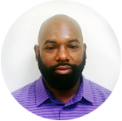
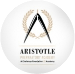
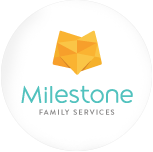

- Leadership
- Clinical Team
- Affiliation
-

Demetruis Crayton

CEO
Demetruis Crayton is a native Fort Walton, Florida. He received a Bachelor degree in Social Work from Tuskegee University. He went on to work as a social worker with children and adults in many agencies such as Florida, North and South Carolina and Missouri. He started HOPE Advancement in 2009 because he saw the growing need for mental health services for children and adults in the community. Mr. Crayton is currently affiliated with several boards in the Charlotte area such as the chairman for Aristotle Preparatory Academy School, and the board of director for The HOPE Youth Network, which is a non-for profit agency.
-
-
Melissa Blakeney
Family Nurse Practitioner
Melissa L. Blakeney is a native of Gadsden, South Carolina. She is a graduate of the public schools of South Carolina. In 1999, Mrs. Blakeney enrolled at College of Charleston, where she completed her Bachelor of Arts in Biology with a minor in Physical Health. Upon graduating in 2003, Melissa heard God's calling and decided that nursing would be her journey in life.
She completed her Bachelor of Science in Nursing at the Medical University of South Carolina in Charleston, South Carolina and soon after, completed her Master of Science in Nursing as a Family Nurse Practitioner at the University of South Carolina in Columbia, South Carolina. Mrs. Blakeney has worked with a number of healthcare providers in South Carolina; in 2010, she relocated to Charlotte and fell in love with the "Queen City."
For the last five years, Melissa has served many of Charlotte's underinsured and uninsured populations. During this time, she noticed that mental health was being overlooked and understaffed. Therefore, Melissa jumped on the pursuit to provide optimal mental and primary care to the community she loved. Mrs. Blakeney is currently working on her Post Master's Psychiatric Nurse Practitioner certification and will graduate in May 2015. Melissa hopes to help as many people that have helped her along the way, even if it takes a lifetime.
-
-
Tiffany C. Huggins LPC
Clinical Director
Tiffany C. Huggins is a Licensed Professional Counselor in the states of NC and SC. She is also a Nationally Certified Counselor. Ms. Huggins recently completed certification as a Certified Disaster Mental Health Response Specialist. She completed her B.A. In Sociology in 2004, certificate in gerontology in 2005, and her M.Ed. In Counseling and Development with a concentration in Community Counseling in 2007 from Winthrop University in Rock Hill, SC.
Ms. Huggins serves as Clinical Director for HOPE Advancement Behavioral Health as well as runs a private practice at Timeless Solutions Counseling Services, PLLC in Charlotte, NC where she focuses on life transitions and loss and grief issues. She also holds a government contract providing services to military personnel and their families. In her spare time she enjoys being with family and friends and listening to live music.
-
-
Ciara Davis
Community Relations Manager
Ciara Davis is a native of Saint Louis, Missouri. She received her Bachelors degree in Social Work from Tuskegee University. Ms. Davis worked with children and families as a social worker for 4 years. She later went on to pursue her career by attaining a Double Masters degree in School and Professional Counseling. Ms. Davis worked as a school counseling for the past 3 years and saw there was a great need for the student and the community in mental health. Ms. Davis plans to be a strong advocator for both the children and their parent in the community. Her other areas of interest include shopping, spending time with family and friends, traveling and playing with her toy yorkie.
-
-
Tomika Sutton
Electronic Medical Records Manager
Tomika S Sutton is a native of Charlotte, NC who has a 3 year son. She has been working with HOPE Advancement for 2 years doing Medical Records and Administrative Assistant duties. By working at HOPE Advancement Tomika has had the opportunity to start her own brand (Sutton Consultant Services, LLC) with the help of Demetrius Crayton and Markita Davis. She enjoys the role of been the Medical Records Specialist and the advantage of meeting new individuals. Tomika Sutton has studied at the institution of Campbell University and at Phoenix University. She is also a Notary for the State of North Carolina. Tomika Sutton looks forward to a long term career as Medical Records Specialist.
-
Latasha D. Watts LCSW
Outpatient Therapist
Latasha D. Watts received her BA in Criminal Justice for the University of North Carolina at Charlotte in 2006 and received her Masters degree in Social Work in 2010 at the University of North Carolina at Charlotte. Latasha D. Watts currently holds the following licensing/certification: QMHP (Qualified Mental Health Professional) received in 2010 and LCSW (Licensed Clinical Social Worker) received in 2012.
Latasha D. Watts has the following experience providing mental health treatment to child and teenage populations for the past 9 years in the areas of: behavioral management, sexual/physical trauma, depression, suicide, psychotic disorders and psycho-education. Latasha D. Watts also has experience working with adults with a variety of mental health issues as well as situational crisis for the past 5 years and has provided mental health treatment in the following settings: psychiatrist hospitalization, in-home treatment, and residential treatment settings for all age groups.
Latasha D. Watts utilizes a client-centered approach to treatment, is a dedicated professional, and provides a flexible schedule to provide the best treatment approach for clients.
-
-
Carisha Pollard LCSW
Outpatient Therapist
Carshia is a native of South Carolina as well as a graduate of Winthrop University. She holds both a undergraduate and graduate degree in social work from the university. After graduating, she went on to secure her clinical license in social work (LCSW). She specializes in work with children and families. In addition to her social work background, Carshia diversified her professional background by earning a teaching certification and has worked in the CMS school system as a high school teacher. Her other areas of interest include reading, spending time with family, and traveling.
-
-
Michael J. Ferguson LCASA
Outpatient Therapist
Micheal J. Ferguson is at the forefront in the field of Child and Family Studies/Social Work. A native of Florence, South Carolina, he realized early on that his thirst to ensure the well-being of others should be a career path. Completing his BS in Child & Family Studies at Benedict College only intensified his thirst, thus prompting him to receive his Masters of Social Work at, The University of South Carolina. He is proficient and certified in Substance Abuse & Treatment Counseling, National Crisis Intervention, HIV/STD, and a plethora of other specialized genres of training.
He has excelled in his field as a Consultative Treatment Group Therapist, an Intensive Home Team Lead, and a Community Support Team Lead and Outpatient Therapist focusing on mental health and rehabilitation. Micheal recognizes the lack of compassion for “at risk” individuals/families which drives him to stellar consumer management, and fuels his passion to provide safe, quality, therapeutic assistance to all of his clients.
-
-
Danny Burnside Ph.D
Outpatient Therapist
Professional Bio: I have a Ph. D. in Clinical Pastoral Psychology, from United Graduate College and Seminary. I am a graduate of the counseling program at Webster University, with a M. A. degree in Professional Community Counseling. I also have a M., Div. in pastoral care and counseling from Gardner-Webb University. And I am Board Certified Licensed Clinical Chaplain, Clinical Pastoral Psychologist, from United Association of Christian Chaplains and Counselors International. As well as Certified in Clinical Pastoral Education.
I am currently pursuing another PhD at Walden University in Clinical Social Work. In my affiliation with this program, I am qualified to counsel under the supervision of an authorized supervisor. My formal education has prepared me to counsel individual, adolescents, adults, and groups. I actively participate in continuing education and consultation for my own professional and personal growth. Some of the courses I have taken during the master’s program include Foundations of Counseling, Human Growth and Development, Group Counseling, Theories of Counseling, Lifestyle and Career Orientation, Research and Evaluation, Psychopathology, Psychodiagnostic and Assessment.
-
-
Nzinga Cates NCC, LPC
Receiving her Master's Degree in Mental Health Counseling from Edinboro University in 2009 and obtaining her Professional License in 2013, Nzinga holds extensive experience working with adolescents with mental health issues and their families. She is skilled at working within the juvenile and adult justice systems, sex offenders, and local school systems. Nzinga enjoys working with couples and families. Nzinga's areas of specialty are anxiety and depression, women's emotional health, family therapy, trauma treatment, and adolescent behavior issues.
Nzinga became a therapist to help people navigate their complex worlds in order to live a healthier, happier life. She believes in an Existential approach to mental health; that all components of one's' life are interrelated and that there is a positive in every negative situation in life.
-

Aristotle Preparatory Academy School
The Mission of APA-CFA is a non-for profit academy, which focuses on preparing students of all racial and ethnic backgrounds for success in college, and to become productive citizens by combing a rigorous STEM-focused curriculum with focused character development.
2461 Arty Ave
Charlotte, NC 28208
Phone: (704) 412-1086 -
-
The HOPE Youth Network
The HOPE Youth Network is a non-for profit organization that works with children on Bullying Prevention, Conflict Resolution, Gang Awareness and Etiquettes.
7950 Nations Ford Rd. C14
Charlotte, NC 28217
Phone: (704) 390-0824 -
-

Mindful Behavior
Mindful Behavioral Inc. is an outpatient behavioral health in Columbia, South Carolina. Mindful Behavioral is accredited by CARF, which is a National Accreditation body, which governs best practices in health care organizations and facilities. Mindful Behavioral is a Certified Provider by the South Carolina State Department Health and Human Services.
Mindful Behavior has a primary focus of providing counseling and community support services to those suffering from issues stemming from stress, depression, anger, substance abuse, financial and housing instability, grief, divorce, couple’s and family issues among other difficulties prominent in adulthood. We also treat childhood disorders to include Attention-Deficit Hyperactivity Disorder (ADHD), Autism, Oppositional Defiant Disorder (ODD), behavioral problems effecting academic abilities.
2712 Middleburg Drive Suite 105
Columbia, SC 29204-2405
US Phone: 803-569-1789 -
-

Milestone Family Services
Milestone Family Services is devoted to providing the highest quality of care according to regulatory standards. Our values hinges on the standards of treatment set forth in accordance with the care necessary for our clients to continue to lead full and well adjusted lives. Milestone Family Services is determined to provide the client with care evidenced by our high standards of training and certification. As such, we provide our clients with in-home care services through our trained nursing aides who have experience in-home care techniques and services. We will ensure a quality experience and a comprehensive approach to Home-Care.
- MFS will promote a climate of integrity, trust and cooperation and professional development among all staff of the company.
- Enable clients to adapt to more effective behavior to expand their capability when receiving care.
- Offering personal care on the foundation of supporting medical diagnosis.
- MFS will uphold a competent and trained staff with the knowledge in in-home care services and provide resources for continual education its staff
5121 Burnaby Ct
Charlotte, NC 28269-0928
(704) 467-4049 -
-
Effecient Care Services, Inc.
Efficient Care Services, Inc. is the one of the area’s leading home care providers that offers the very best compassionate care for our clients. It is our goal to improve the physical, emotional and spiritual wellness of our client’s daily. Efficient Care Services, Inc. is dedicated to ensure that caregivers will provide care to people of all ages who want to live in the comfort of their own home but need a little assistance.
We work with individuals to evaluate the level of care that is necessary to improve their quality of life. We offer a variety of services to give our clients the specific care they need including comprehensive assessments with a written detailed plan of care, personal care (bathing/bathroom assistance), light housekeeping/laundry, companion services, respite care, meal preparation and medication reminders. Efficient Care Services, Inc. is devoted to being your extended family. Your loved one deserves to have all the comforts of home and given the dignity that they deserve.
1801 N. Tryon Street Suite 327
Charlotte, NC 28206
Phone: (704) 714-9868
Fax: (704) 714-9869